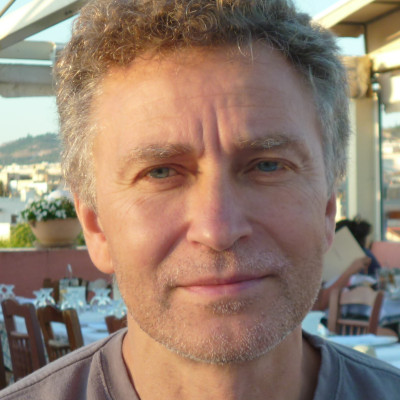

Organisers
Meet our organizing committee
Dr. Evgeny Kozik
Department of Physics
King's College London

Dr. Olivier Parcollet
CCQ
Flatiron Institute

Prof. Nikolay Prokofiev
Department of Physics
University of Massachusetts Amherst
Prof. Boris Svistunov
Department of Physics
University of Massachusetts Amherst

Prof. Shiwei Zhang
CCQ
Flatiron Institute